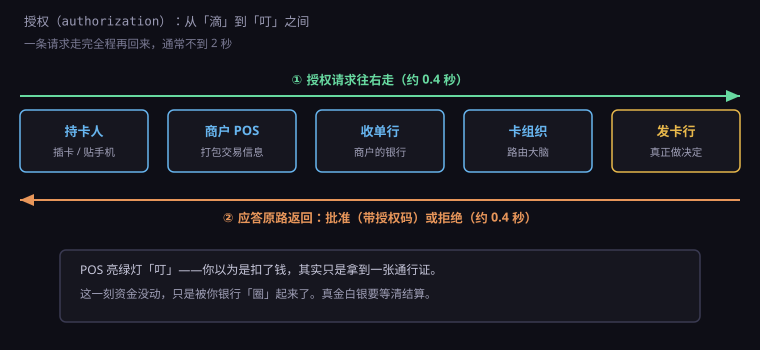
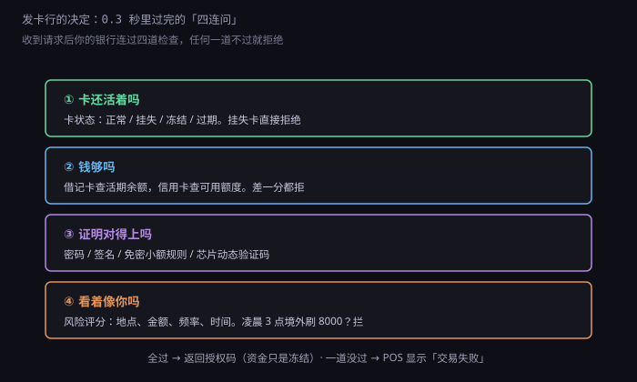
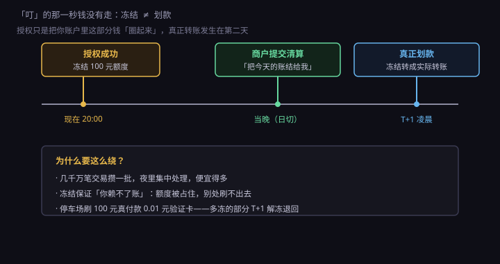

约 0.4 万字 · 3 张图 · 一条请求跑完五站只用一秒多，而钱一动没动
先拆一个最常见的误解。
大部分人脑子里的模型是这样的：卡是一把钥匙，插进机器， 机器打开你银行账户的门，把钱抓出来，塞给商户。 一进一出，当场结清。
真实的模型完全不是这样。真实的刷卡是：POS 机跑去问你银行"这钱能不能付"， 银行说"能"，然后这笔账被记下来，真正的钱要等后面另外一道工序才动。
为什么不能像转账一样当场就动钱？因为当场动钱太贵了。 刷卡一天几千万笔，如果每一笔都要实时改两个账户的余额、 还要保证两边同时成功， 那这套系统要处理的一致性问题是灾难级的。 万一商户那边改成功了、你这边网络断了呢？钱就凭空出现在两个地方。
所以这套系统被劈成了两半：
前半截叫授权（authorization）——实时、在线、只问不做，
问一句"能不能付"，一秒内给答复。
后半截叫清结算（clearing & settlement）——离线、批量、每晚跑，
把一天攒下来的几千笔账一次性划清楚。
你听到的"叮"，是前半截结束的声音。后半截在你睡着的时候才发生。
那"问一句"要走多远？五站。

第一站是商户 POS。它把你卡里的信息、这次消费的金额、 自己的商户编号打包成一条报文，发出去。 如果是插卡，芯片和 POS 之间先握手，芯片现场算一个动态验证码塞进包里； 如果是贴手机，手机里的令牌号代替真实卡号（7.4.2 讲过）。
第二站是收单行。它是给这个商户装机器、帮商户收钱的那家机构。 小店门口贴的"收款由 XX 银行提供"，说的就是它。 收单行看一眼这个商户还活着没有、有没有被风控标记，再加上自己的机构号，往上传。
第三站是卡组织。银联、Visa、Mastercard 都在这一站。 它干的事听起来简单——看卡号开头几位， 判断这张卡归哪家银行，然后把包转过去。 但它是整个网络的中枢：全国几百万台 POS 连到它身上， 它要在几十毫秒内找到正确的目的地，还要记账、留痕、防备有人重放同一个包。
第四站是发卡行。你的银行。真正做决定的只有它。 它手上才有你的余额、你的密码、你的历史交易。 前面三站都是跑腿的，谁也没资格说"这笔能付"。
第五站是回程。决定做好以后，答复沿着原路退回去： 发卡行 → 卡组织 → 收单行 → POS。回程不重新找路，就照原路返回。 因为来的时候路上已经建好了会话，回去再用一遍最省事。
全程多久？同城交易常见 300~500 毫秒， 跨行跨网络、加上芯片交互，一秒多。 你在货架前等的那一下，就是这个时间。
顺带说一句：这条路上每一个节点都是双机热备， 卡组织的机房通常至少两地三中心。 因为只要中间断一环，全国的 POS 就都不能刷了—— 这种事故在历史上真的发生过，一次就能让一座城市的收银台瘫掉。
这条来回跑的报文，格式叫 ISO 8583。 1970 年代定下的东西，改到现在还在用， 全世界几乎所有银行卡交易都跑在它的变体上。
它的结构很朴素：一段固定长度的头，加一张"位图"，再加一串域（field）。 位图是个 64 位或 128 位的二进制数，每一位代表"这个域这次有没有带"。 第 2 位是 1，就说明后面跟着主账号； 第 4 位是 1，就说明跟着交易金额。 这样一条报文可以只带必需的那几个域，不用每次把上百个字段全塞满。
几个关键域，认识一下就能看懂大半：
| 域 | 装什么 | 例子 |
|---|---|---|
DE 2 | 主账号，就是卡号 | 622202******7894 |
DE 3 | 处理码，说明这是什么类型的交易 | 000000 消费、200000 退货 |
DE 4 | 交易金额，12 位数字，单位是分 | 12.50 元 → 000000001250 |
DE 11 | 系统跟踪号，同一台机器当天不重复 | 004821 |
DE 39 | 应答码，回程才有 | 00 批准、51 余额不足 |
DE 41 | 终端号，哪台 POS | POS0031 |
DE 42 | 商户号，哪家店 | 898110158110001 |
注意 DE 4：金额是整数，单位是分。
12.5 元传的是 1250，不是 12.5。
这不是随手定的。钱这种东西用浮点数存，迟早出事——
0.1 加 0.2 在浮点里不等于 0.3，一分钱的误差在金融系统里就是账对不上。
所以全世界跟钱有关的系统，内部一律存最小货币单位的整数，
只在给人看的时候才补小数点。这个习惯你以后写代码也要照抄。
还有 DE 11 系统跟踪号。它的作用是防止同一笔交易被重复提交：
卡组织和发卡行都会记住最近一段时间见过的跟踪号，
同一个号再来一次，直接当重复包丢掉。
不然的话，网络抖动一下重发，你可能就被扣两次钱。
报文到了发卡行，剩下的戏全在这儿。 你的银行要在三百毫秒内连着判四件事，任何一件不过，这笔就拒。

第一问：这张卡还活着吗。 查卡的状态表。正常、挂失、冻结、过期、未激活，各有各的码。 你上周报失的那张卡如果还被人捡去刷，就死在这一关。
第二问：钱够吗。 借记卡查活期账户的可用余额，信用卡查可用额度。 这里有个细节：查的是可用余额，不是账户余额。 你账上有 5000，但昨天已经冻结了 4800 等着扣，可用就只剩 200。 这时候刷 300 一样会被拒，虽然你"明明有钱"。 很多人骂银行"我账户里明明有钱"，就是不知道这两个数不是一回事。
第三问：证明对得上吗。 密码对不对，签名有没有，是不是在免密免签的小额范围内， 芯片给的动态验证码能不能通过校验。 这一问是防"别人拿到你卡号就能刷"的。
第四问：看着像你吗。 这一问没有标准答案，是个打分模型。 它看的东西包括：这笔钱在哪个城市、跟你平时活动范围差多远、 金额是不是远超你日常消费、几分钟内是不是已经刷了好几笔、 现在是凌晨三点还是下午两点、商户类型是不是高风险（珠宝、游戏点卡、境外博彩）。
分数高到一定程度，不直接拒，而是"要你多证明一次"： 手机弹一条验证码，或者干脆打电话过来问。 这就是为什么你在境外网站第一次付款时，会跳到一个要输短信码的页面。
四问都过，发卡行生成一个 6 位授权码，连同应答码 00 一起退回。
POS 收到就亮绿灯。这个授权码不是随便编的，它进了发卡行的流水，
以后商户来请款的时候要对得上号——对不上，这单就不给结。
收银员跟你说"不好意思，没刷上"，你可能一头雾水。 其实 POS 上是有码的，只是不外露。常见的是这几个：
| 码 | 含义 | 真实原因 |
|---|---|---|
| 00 | 批准 | 四问全过 |
| 51 | 余额不足 | 可用余额不够，不是账户余额 |
| 55 | 密码错误 | 连错次数超限会直接锁卡 |
| 61 | 超限额 | 单笔或当日累计超了你卡的限制 |
| 14 | 无效卡号 | 卡号不存在，或卡已注销 |
| 05 | 不予批准 | 风控拦了，最常见于境外首刷 |
| 57 | 交易不允许 | 没开通境外交易、没开通该商户类型 |
| 96 | 系统异常 | 发卡行自己挂了，或者超时没答复 |
这里面最冤的是 96。它不是你的问题，是银行系统的问题。
但麻烦在于：超时的时候，你不知道那笔到底成功没有。
一边可能已经扣了，一边 POS 显示失败，收银员让你再刷一次。
结果就是同一笔钱扣两遍，第二天你才发现，得打电话去要回来。
这个问题的正规解法叫"冲正"（reversal）。 POS 发现超时，会马上补发一条冲正报文，告诉发卡行"刚才那笔作废"。 但冲正本身也可能失败，所以最终兜底的还是人： 对账的时候发现多扣了，就退。 这也是为什么刷卡出问题，银行总让你"等三个工作日"—— 它要等对账流程跑完才敢动账。
现在回到最关键的那一点上。
授权成功的那一刻，你的钱并没有走。 走的是另外一种东西——可用额度被占用。

借记卡上，银行会把这笔金额从"可用余额"里扣出来，放到一个"冻结"的篮子里。 账户余额还显示 5000，可用余额变成 4000，中间那 100 块悬在那儿， 谁也动不了，但也没进商户的口袋。
信用卡上更直白：额度 20000，可用额度变成 19900。你欠的钱还没入账， 只是刷不出那 100 了。
这笔悬着的钱，要等一个叫清算的动作才落地： 商户当晚把一天的交易打包提交（叫"请款"或"提交清算"）， 卡组织把各家的应收应付轧差算清楚， T+1 凌晨银行之间真正转账，商户账户上才出现这笔钱。
为什么非要把"冻结"和"划款"分开？三个理由：
一是省钱。 一天几千万笔，如果每笔都实时跨行转账，手续费和系统压力都受不了。 攒成一批夜里算，成本能降到几十分之一。
二是防赖账。 钱冻住了，你转身去别家店把这 100 再刷一次也刷不出来。 冻结是一张"预订票"，先占住座，回头再上车。
三是留了改口的余地。 授权的时候还不知道最终会收多少。 酒店、租车、加油这类场景，先冻一笔，最后按实际消费结算， 多冻的部分原路退回。如果当场就把钱扣死，退起来就麻烦了。
住酒店的时候你可能会遇到这种事：房费 400，前台却冻了你 800， 甚至 1500。你心里一紧——是不是被坑了？
这叫预授权（pre-authorization）。 前台刷的那一下，请求里带的金额比房费高， 目的是把你在店里的其他消费也框住：mini bar、餐厅、洗衣、损坏赔偿。 这笔钱只是冻住，不是扣走。
离店结账的时候，酒店发一条"预授权完成"的报文，带上实际消费金额。 结算 620，那多冻的 180 就会被释放，回到你的可用余额里。 这个过程叫"预授权完成"，一笔预授权可以对应一次或多次完成， 但总额不能超过原来冻的数。
如果你走的时候酒店忘了做完成，那笔冻结会一直挂着。 这时候别慌——它不会自动变成扣款。 大部分发卡行的规则是：预授权超过一定天数（常见 7 天到 30 天， 酒店类通常 30 天）没被完成，系统自动解冻。 只是这几天你的额度会被白白占着。
加油站的套路更细。你在加油机上刷卡，常见先冻 200 或 500， 加完 300 之后按实际金额结算，剩下的退回。 有些地方甚至会先冻 1 元验证卡有效，加完再单独扣一笔—— 所以你的短信可能连响两条，看着像被扣了两次，其实一条是冻结通知。
能。而且这件事暴露了整套系统的软肋。
小店断网的时候，POS 会切到离线模式： 不问了，直接记账，把交易存在本地，等网络恢复再批量上送。 当然不是无限额——每台机器有一个"离线限额"（floor limit）， 常见几百块，超过就得等联网。小额免密免签的额度也在这个逻辑里。
离线交易的风险谁承担？商户和收单行。 因为它没经过发卡行批准，等上送的时候很可能被拒—— 卡是挂失的、余额早就没了、额度超了。 拒了之后钱收不回来，商户自己吃。 所以愿意开离线模式的，多是便利店、加油站这种"宁可担点风险也别让客人排队"的地方。
还有一种更隐蔽的情况叫降级交易： 芯片卡插进去读不出来，POS 退回用磁条刷。 磁条上只有静态数据，容易被复制（7.4.2 讲过）， 所以一旦降级，风险就从发卡行转移到收单方。 这也是为什么现在很多 POS 干脆禁止降级—— 读不出芯片就让你换一张卡，不给你刷磁条的机会。
你听到的每一声"叮"，背后都是这套流程在跑： 一条报文五站接力、四道检查、一个授权码、一笔冻结， 然后等夜里那场看不见的批量清算把它变成真钱。 下一节就专门讲那场夜间清算——钱是怎么从"冻结"变成"到账"的。